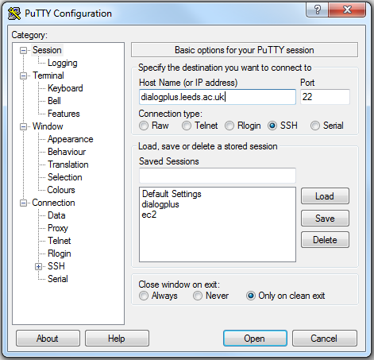

Linux: Dialog-Plus
The server we shall use for this part of the course is dialogplus.leeds.ac.uk.
This can be accessed using PuTTY software or similar applications. PuTTY allows you to interact
with a remote computer via a command prompt. A copy of PuTTY can be downloaded from
here if you do not have a copy. It doesn't need installing; you can
just run it by double-clicking it.
In this task you are required to:
- Connect to dialogplus using the PuTTY software
- Check your personal directory on the web server
- Check which version of Apache dialogplus is running
- Open PuTTY now and connect to the dialogplus server using your log on credentials.
In the box marked 'Host Name (or IP address)' you should type 'dialogplus.leeds.ac.uk',
and for Connection type, select 'SSH', the port is 22.

- Click open and you will be prompted for your username and password.
As the Dialogplus server is running Linux, you can navigate your directories with Linux commands
(cd, ls)
- List the contents of your current directory and you should see a directory called web
Any files you place in this directory will be available at dialogplus.leeds.ac.uk/geog5870/USERNAME
where username is the username you have been provided with for Dialogplus.
- Use the 'httpd -v' command to check which version of Apache is running.
- Use
exit to exit PuTTY and close the connection.
[Course Index]